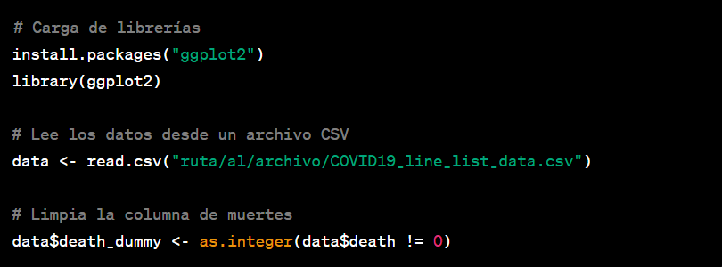
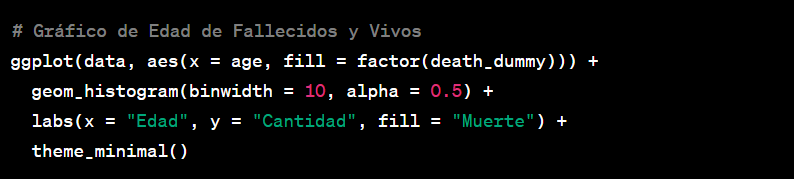
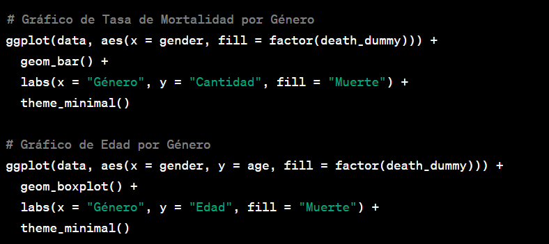
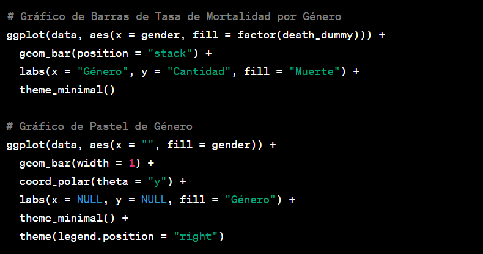
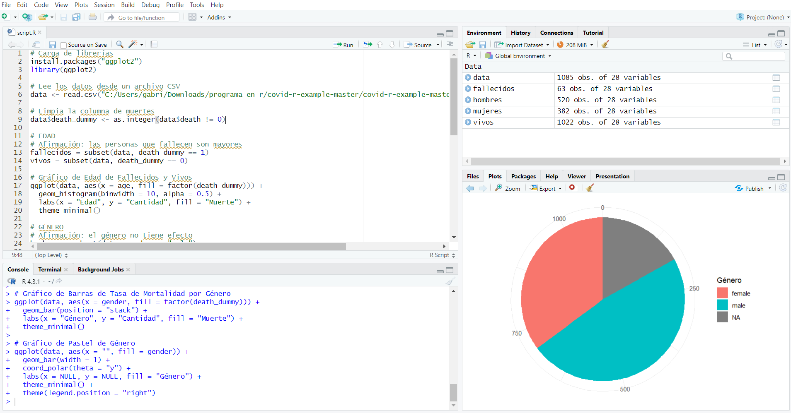

En medio de la era digital y con las herramientas de análisis de datos al alcance de nuestras manos, la posibilidad de explorar y comprender fenómenos complejos como la pandemia de COVID-19 se vuelve más accesible que nunca. En este blog, te sumergiremos en un análisis de datos utilizando el lenguaje de programación R y la poderosa librería ggplot2, que nos permitirá visualizar la relación entre la edad, el género y la mortalidad en los casos de COVID-19.
Lo primero que haremos es cargar la librería ggplot2, ampliamente utilizada para crear visualizaciones elegantes y efectivas en R. Además, importaremos nuestros datos desde un archivo CSV que contiene información sobre casos de COVID-19.

Para comenzar nuestro análisis, nos enfocaremos en explorar si existe alguna relación entre la edad y la mortalidad en los casos de COVID-19. Para ello, crearemos un histograma que muestra la distribución de edades entre las personas fallecidas y las personas que sobrevivieron.

Otra pregunta importante es si el género juega un papel significativo en la mortalidad. A través de gráficos de barras y un gráfico de caja, examinaremos si existe una diferencia en la tasa de mortalidad entre géneros.

Deseamos profundizar aún más en la relación entre género y mortalidad. Por ello, presentamos representaciones adicionales, incluyendo un gráfico de barras apiladas y un gráfico de pastel polar que resaltan las diferencias en la tasa de mortalidad entre géneros

A través de este análisis de datos utilizando R y la librería ggplot2, hemos arrojado luz sobre la relación entre la edad, el género y la mortalidad en casos de COVID-19. Las visualizaciones nos permiten observar patrones y tendencias que podrían ayudarnos a comprender mejor la dinámica de la pandemia.
Este análisis también destaca el poder de las herramientas de análisis de datos para transformar información cruda en conocimientos valiosos. Al explorar conjuntos de datos y crear visualizaciones significativas, los profesionales pueden tomar decisiones informadas y contribuir al avance del conocimiento.
En resumen, a medida que exploramos los datos, recordemos que cada gráfico, cada estadística, representa vidas y experiencias. Al aplicar estas herramientas con responsabilidad y empatía, podemos contribuir al esfuerzo global por enfrentar desafíos como la pandemia de COVID-19.
Nota: Asegúrate de modificar "ruta/al/archivo/COVID19_line_list_data.csv" con la ubicación correcta de tu archivo de datos
Este blog es solo el comienzo de un viaje de exploración y aprendizaje en el mundo del análisis de datos. Te animamos a seguir explorando, aprendiendo y aplicando estas herramientas para descubrir información valiosa en cualquier conjunto de datos que encuentres. ¡El análisis de datos tiene el potencial de revelar sorpresas y generar un impacto positivo en el mundo que nos rodea!

Dejame un comentario